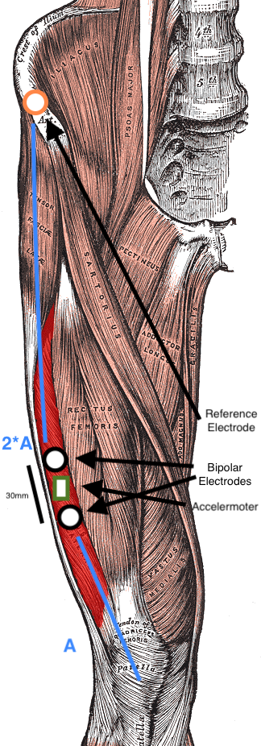

Study Protocol
Last edited: June 11th, 2024
Variables to be Collected
- Muscle Data
- EMG measurements
- MMG measurements
- Survey data
- Step count
Muscle Data Measurement
Timing? -> in the morning?! (most consistent?)
EMG + MMG Measurement Protocol
- Clean skin where the electrodes will be positioned
- Position measurement electrodes as in Smith et al 2017 - see drawing 
- Start protocol time tracker
- Sit down on the floor, against a wall, legs straight
- Keep muscles relaxed, start measurement (10s)
- Try to maximally contract your upper leg muscles as much as possible for 3 x 6s (see also Hendrix et al (2009))
- Stand up and take wall sit position, 90 degree angle (30s) (this is a form of isometric muscle contraction and according to Li et al. 2024, this is the type of exercise most often used in fatigure detection based on EMG; also wall sit is an exercise that engages the vastus lateralis; similarly Gawda et al 2018 ask runners to perform 60s squats to measure fatigue)
- Sit down again, back agains the wall, legs straight (10s)
Survey
Questions from first trial
- How fatigued were you today? 1 (no fatigue at all) to 7 (extremely fatigued)
- Symptoms experienced today
- Muscle weakness
- Trouble climbing stairs
- Trouble standing from a seated position
- Active Rash
- Brain Fog
- Extreme Fatigue
- How difficult was it to dress and shower today? 1 (no difficulty) to 5 (unable to do).
- How difficult was it to climb stairs today? 1 (no difficulty) to 5 (unable to do).
- How difficult was it to complete common daily activities? 1 (no difficulty) to 5 (unable to do). [Kick Out - high correlation with pain]
- How much pain were you in today? 1 (pain at all) to 5 (worst pain experienced).
- Do you have an active and visible rash? 1 (no rash at all) to 5 (very visible rash in DM areas)
- Overall how did you feel today? As an overall "wellness" 1 (horrible, hard to function) to 5 (very well).[Kick Out - high correlation with pain]
- How do you think you will feel tomorrow? As an overall "wellness" 1 (horrible, hard to function) to 5 (very well).
References
-
Hendrix C. Russell , Housh Terry J. , Johnson Glen O. , Mielke Michelle, Camic Clayton L. , Zuniga Jorge M. , Schmidt Richard J., A new EMG frequency-based fatigue threshold test, Journal of Neuroscience Methods, Volume 181, Issue 1, 2009, Pages 45-51, ISSN 0165-0270, https://doi.org/10.1016/j.jneumeth.2009.04.011.
-
Gawda P, Ginszt M, Ginszt A, Pawlak H, Majcher P. Differences in myoelectric manifestations of fatigue during isometric muscle actions. Ann Agric Environ Med. 2018 Jun 20;25(2):296-299. doi: 10.26444/aaem/81716. Epub 2018 Feb 21. PMID: 29936808.
-
Na Li, Rui Zhou, Bharath Krishna, Ashirbad Pradhan, Hyowon Lee, Jiayuan He, and Ning Jiang. 2024. Non-invasive Techniques for Muscle Fatigue Monitoring: A Comprehensive Survey. ACM Comput. Surv. 56, 9, Article 221 (September 2024), 40 pages. https://doi.org/10.1145/3648679
-
Smith, C.M., Housh, T.J., Hill, E.C., Johnson, G.O. and Schmidt, R.J. (2017), Changes in electromechanical delay during fatiguing dynamic muscle actions. Muscle Nerve, 56: 315-320. https://doi.org/10.1002/mus.25502